Ya hemos visto que el almacenamiento en la nube ofrece un gran número de ventajas. Otro de los productos estrella de la computación en la nube es el uso de bases de datos, ya sean distribuidas o no.
La principal ventaja de utilizar un servicio de base de datos basado en la nube es que no requieren de la administración por parte del usuario. Éste sólo utiliza el servicio sin necesidad de tener conocimientos avanzados sobre su administración. Estos servicios se conocen como administrados, ya que la propia plataforma cloud se encarga de gestionar el escalado, las copias de seguridad automáticas, la tolerancia a errores y la alta disponibilidad, y por tanto, estos servicios forman parte de una solución PaaS.
Si nosotros creásemos una instancia EC2 e instalásemos cualquier sistema gestor de base de datos, como MariaDB o PostgreSQL, seríamos responsables de varias tareas administrativas, como el mantenimiento del servidor y la huella energética, el software, la instalación, la implementación de parches y las copias de seguridad de la base de datos, así como de garantizar su alta disponibilidad, de planificar la escalabilidad y la seguridad de los datos, y de instalar el sistema operativo e instalarle los respectivos parches.
AWS ofrece Amazon RDS (https://aws.amazon.com/es/rds/) como servicio administrado que configura y opera una base de datos relacional en la nube, de manera que como desarrolladores sólo hemos de enfocar nuestros esfuerzos en los datos y optimizar nuestras aplicaciones.
Una instancia de base de datos es un entorno de base de datos aislado que puede contener varias bases de datos creadas por el usuario. Se puede acceder a él utilizando las mismas herramientas y aplicaciones que utiliza con una instancia de base de datos independiente.
Cuando vamos a crear una instancia de base de datos, primero hemos de indicar qué motor de base de datos ejecutar. Actualmente, RDS admite seis motores de bases de datos:
MySQL, compatible con las versiones 5.6, 5.7 y 8.0.
Microsoft SQL Server, que permite implementar varias versiones de SQL Server (2012, 2014, 2016, 2017 y 2019), incluidas las Express, Web, Standard y Enterprise.
PostgreSQL, compatible con las versiones 9.6, 10, 11 y 12.
MariaDB, compatible con las versiones 10.2, 10.3, 10.4 y 10.5
y Oracle, compatible con Oracle 12 y Oracle 19, con dos modelos de licencia diferentes: Licencia incluida y Bring-Your-Own-License (BYOL).
Los recursos que se encuentran en una instancia de base de datos se definen en función de la clase de instancia de base de datos, y el tipo de almacenamiento se determina por el tipo de disco. Las instancias y el almacenamiento de base de datos difieren en cuanto a las características de rendimiento y al precio, lo que permite adaptar el coste y el rendimiento a las necesidades de nuestra base de datos.
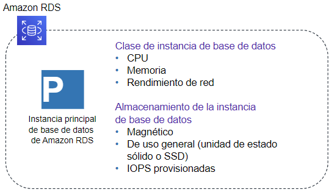
Instancia de RDS
Por ejemplo, si seleccionamos el motor de MariaDB, podemos observar como mediante la creación sencilla nos ofrece tres propuestas de tamaño, dependiendo de si es para el entorno de producción, desarrollo y pruebas o el de la capa gratuita.
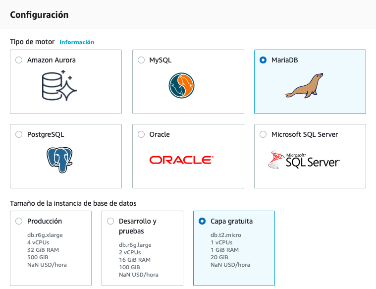
Configuración de tamaño de la instancia con MariaDB
Una de las características más importantes de RDS es la capacidad de configurar la instancia de base de datos para una alta disponibilidad con una implementación Multi-AZ. Al hacerlo, se genera de manera automática una copia en espera de la instancia de base de datos en otra zona de disponibilidad dentro de la misma VPC. Después de propagar la copia de la base de datos, las transacciones se replican de forma síncrona a la copia en espera.
Alta disponibilidad en Multi-AZ
Por lo tanto, si la instancia de base de datos principal falla en una implementación Multi-AZ, RDS activa automáticamente la instancia de base de datos en espera como la nueva instancia principal.
RDS también admite la creación de réplicas de lectura para MySQL, MariaDB, PostgreSQLy Amazon Aurora.
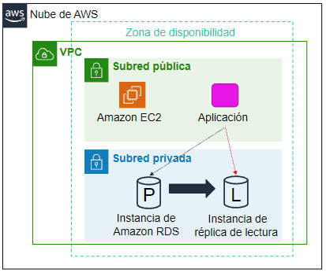
Réplica de lectura
Las actualizaciones que se realizan en la instancia principal se copian de manera asíncrona en la instancia de réplica de lectura, de manera que direccionando las consultas a esta nueva réplica reduciremos la carga de la instancia principal.
Las réplicas de lectura también pueden convertirse en la instancia de base de datos principal, pero, debido a la replicación asíncrona, este proceso debe hacerse de forma manual.
Las réplicas de lectura pueden crearse en una región diferente a la utilizada por la base de datos principal, lo que puede mejorar la recuperación de desastres y/o disminuir la latencia al dirigir las lecturas a una réplica de lectura lo más cercana al usuario.
AmazonRDS es ideal para las aplicaciones web y móviles que necesitan una base de datos con alto rendimiento, enorme escalabilidad en el almacenamiento y alta disponibilidad.
Se recomienda RDS cuando nuestra aplicación necesite:
Transacciones o consultas complejas
Tasa de consulta o escritura media a alta: hasta 30.000 IOPS (15.000 lecturas + 15.000 escrituras)
No más de una única partición o nodo de trabajo
Alta durabilidad
En cambio, no se recomienda cuando:
Tasas de lectura o escritura muy grandes (por ejemplo, 150.000 escrituras por segundo)
Fragmentación causada por el gran tamaño de los datos o las altas demandas de rendimiento
Solicitudes y consultas GET o PUT simples que una base de datos NoSQL puede manejar
Personalización del sistema de administración de bases de datos relacionales (en este caso, es mejor instalar por nuestra cuenta el SGBD que necesitemos en una instancia EC2).
El coste se calcula en base al tiempo de ejecución (calculado en horas) así como las características de la base de datos. Las características de la base de datos varían según el motor, el tipo de instancia y su cantidad, así como la clase de memoria de la base de datos.
Otros gastos asociados son:
almacenamiento aprovisionado: el almacenamiento para copias de seguridad de hasta el 100% del almacenamiento de nuestra base de datos activa es gratuito. Una vez que se termina la instancia de base de datos, el almacenamiento para copias de seguridad se factura por GB por mes.
cantidad de solicitudes de entrada y de salida.
Aunque se recomienda utilizar la calculadora de costes para afinar en el presupuesto, por ejemplo, una base de datos con MariaDB con una instancia db.m4.large con 2 procesadores y 8GB de RAM, en una única AZ, con un porcentaje de utilización del 100% y 30GB para almacenar los datos, cuesta alrededor de 131$ mensuales. En cambio si la cambiamos por dos instancias más potentes, como puede ser la db.m4.4xlarge, con 16 procesadores y 64 GB de RAM, en multi-AZ ya sube a unos 4.100$ al mes.
Es importante recordar que si reservamos las instancias estos costes se reducirían en proporción a 2350$ (reserva de un año) o 1526$ (reserva de tres años).
A continuación vamos a hacer un ejemplo sencillo donde vamos a crear una base de datos con la información que vimos en el bloque de SQL. Para ello, crearemos una instancia de MariaDB y nos conectaremos desde HeidiSQL.
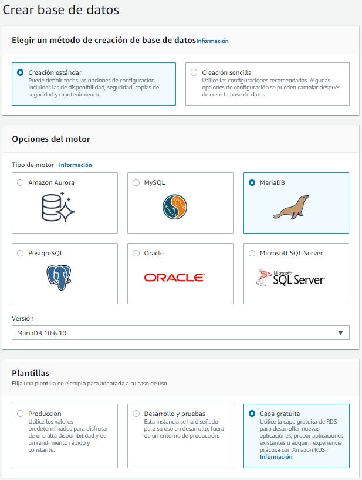
Creación de la BD en RDS
Así pues, desde la consola de AWS, crearemos nuestra base de datos a la que llamaremos instituto.
En nuestro caso hemos seguido la creación estándar con una plantilla de la capa gratuita (utiliza una instancia db.t4g.micro). Una vez configurado el usuario admin y la contraseña adminadmin (al menos debe tener ocho caracteres), debemos configurar la conectividad.
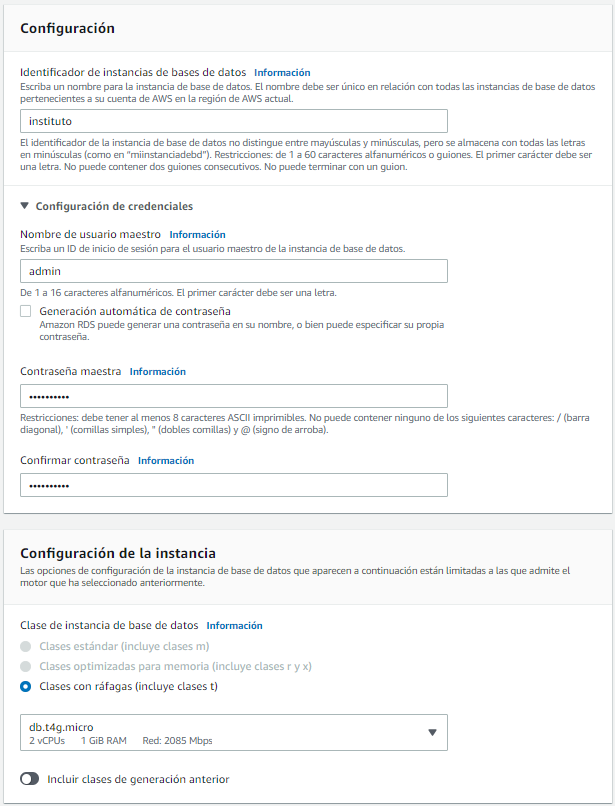
Configuración de la conectividad en RDS
Instancias permitidas en AWS Academy
Si queréis crear bases de datos con máquinas más potentes, podéis utilizar instancias hasta nivel large, y a ser posible a ráfagas (instancias t). Dentro de la Configuración adicional, es importante deshabilitar la monitorización mejorada (no tenemos permiso para su uso en AWS Academy).
Como vamos a querer acceder a nuestro servidor de MariaDB desde fuera de una VPC de EC2, necesitamos configurar el acceso público. Al hacerlo, no quiere decir que ya sea accesible desde fuera de internet, ya que necesitamos configurar su grupo de seguridad (recordad que funciona a modo de firewall). Así pues, es recomendable crear un nuevo grupo de seguridad para que permitamos las conexiones del puerto 3306 a nuestra IP.
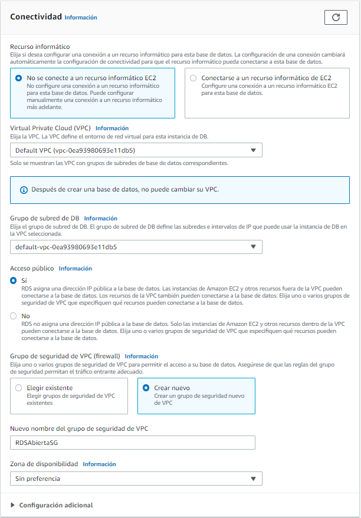
Configuración de la conectividad en RDS
Así pues, una vez creada (lo cual tarda unos minutos), podremos seleccionar la instancia creada y ver su panel de información:
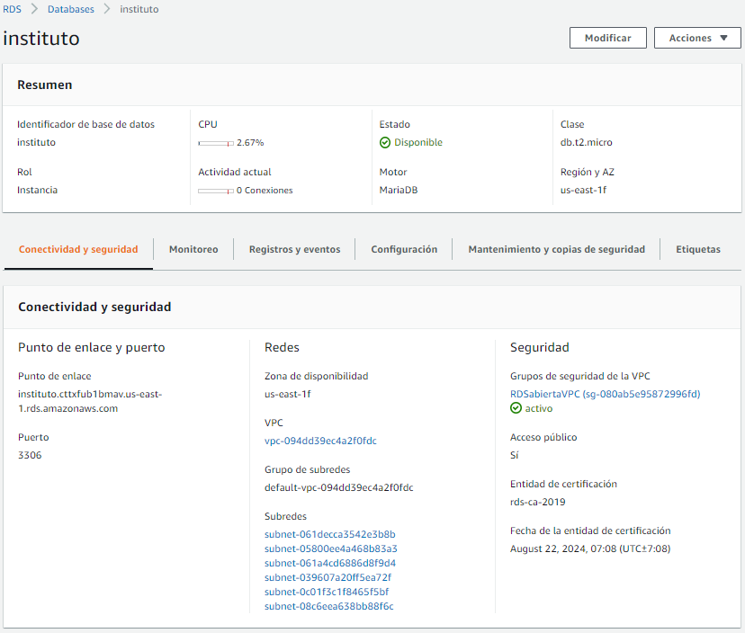
Resumen de instancia en RDS
Así pues, si copiamos la información del punto de enlace y creamos una conexión en DBeaver, veremos que nos conectamos correctamente (si no hemos creado un nuevo grupo de seguridad, deberemos editar el grupo de seguridad por defecto, y añadir una regla de entrada para el protocolo TCP para el puerto 3306, y por ejemplo para todo internet - 0.0.0.0/0).
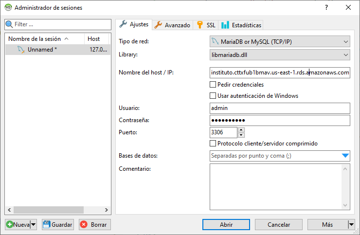
Configuración en DBeaver
Una vez conectado, ya procedemos de la misma manera que si tuviéramos la base de datos en un entorno local.
Amazon Aurora es una base de datos relacional compatible con MySQL y PostgreSQL optimizada para la nube. Combina el rendimiento y la disponibilidad de las bases de datos comerciales de alta gama con la simplicidad y la rentabilidad de las bases de datos de código abierto. Ofrece dos modelos, el clásico basado en instancias y un modelo serverless en el cual se contratan unidades de computación (ACU).
Al estar desarrollado de forma nativa por Amazon se adapta mejor a su infraestructura en coste, rendimiento y alta disponibilidad. Está pensado como un subsistema de almacenamiento distribuido de alto rendimiento, ofreciendo automatización de las tareas que requieren mucho tiempo, como el aprovisionamiento, la implementación de parches, las copias de seguridad, la recuperación, la detección de errores y su reparación.
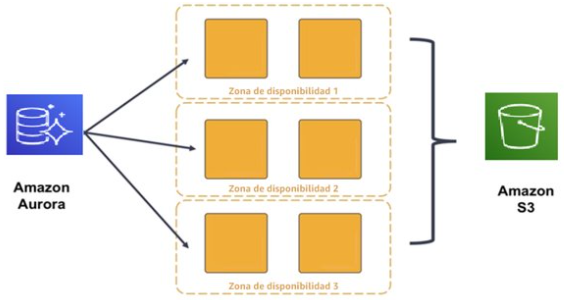
Alta disponibles con Aurora
Aurora replica varias copias de los datos en múltiples zonas de disponibilidad y realiza copias de seguridad continuas de los datos en S3.
Respecto a la seguridad, hay varios niveles disponibles, incluidos el aislamiento de la red con VPC, el cifrado en reposo por medio de claves creadas y controladas con AWS KMS y el cifrado de los datos en tránsito mediante SSL.
Respecto al coste, si cogemos el mismo ejemplo anterior de una instancia de Aurora compatible con MySQL con dos procesadores y 8GB de RAM, en este caso, la db.t4g.large, el precio se queda en 106$ mensuales.
DynamoDB (https://aws.amazon.com/es/dynamodb/) es un servicio administrado de base de datos NoSQL clave-valor y documental, rápido y flexible para todas las aplicaciones que requieren una latencia uniforme de un solo dígito de milisegundos a cualquier escala y una capacidad de almacenamiento prácticamente ilimitado.
Así pues, es un almacén de claves/valor (similar a Redis y MongoDB a la vez), flexible y sin estructura fija (los elementos pueden tener atributos diferentes), diseñado para garantizar un determinado rendimiento así como una determinada disponibilidad para cada tabla (en NoSQL suele haber pocas tablas), es decir, se definen elementos por tabla y se paga según lo exigido en cada una.
las tablas: son conjuntos de datos, formada por los elementos.
los elementos: grupo de atributos que se puede identificar de forma exclusiva entre todos los demás elementos
los atributos: elemento de datos fundamental que no es preciso seguir dividiendo.
DynamoDB soporta dos tipos de claves principales:
La clave de partición es una clave principal simple.
La clave de partición y de ordenamiento, también conocidas como clave principal compuesta, ya que está formada por dos atributos.
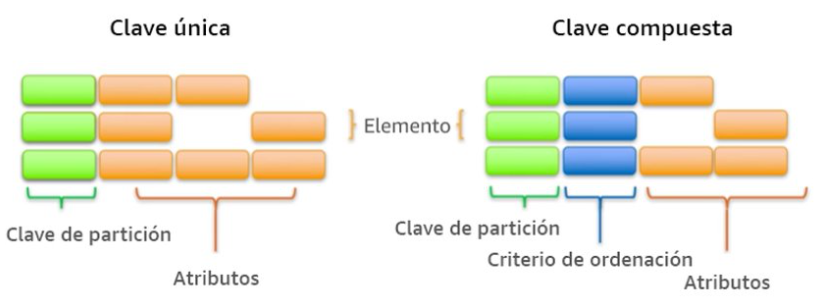
Claves
A medida que aumenta el volumen de datos, la clave principal particiona e indexa los datos de la tabla. Podemos recuperar los datos de una tabla de DynamoDB de dos formas distintas, bien por la clave y hacer una consulta directa, o utilizar un escaneo de todos los elementos en busca de aquello que coincida con el parámetro de búsqueda.
Consultas por clave o escaneo
Para aprovechar al máximo las operaciones de consulta, es importante que la clave utilizada identifique de forma unívoca los elementos de la tabla de DynamoDB. Podemos configurar una clave principal simple basada en un único atributo de los valores de los datos con una distribución uniforme. De forma alternativa, podemos especificar una clave compuesta, que incluye una clave de partición y una clave secundaria.
Además, DynamoDB permite crear índices para optimizar las consultas que realicemos sobre atributos que no forman parte de la clave de partición u ordenamiento.
AWS administra toda la infraestructura subyacente de datos y los almacena de manera redundante en varias instalaciones dentro de una región, como parte de la arquitectura tolerante a errores.
El sistema particiona los datos automáticamente, distribuyendo los datos entre diferentes dispositivos de almacenamiento. No existe ningún límite práctico respecto de la cantidad de elementos que se pueden almacenar en una tabla. Por ejemplo, algunos clientes tienen tablas de producción con miles de millones de elementos.
Todos los datos de DynamoDB se almacenan en unidades SSD, y su lenguaje de consulta simple (PartiQL) permite un rendimiento de las consultas uniforme y de baja latencia. Además de escalar el almacenamiento, DynamoDB permite aprovisionar el volumen del rendimiento de lectura o escritura que necesita para cada tabla.
También facilita el escalado automático, monitorizando la carga de la tabla e incrementando o disminuyendo el rendimiento aprovisionado de manera automática. Otras características clave son las tablas globales que permiten generar réplicas de manera automática en las regiones de AWS que elijamos, el cifrado en reposo y la visibilidad del tiempo de vida (TTL) de los elementos.
Con DynamoDB se cobran las operaciones de lectura, escritura y almacenamiento de datos en sus tablas, junto con las características opcionales que decidamos habilitar. Ofrece dos modos de capacidad con opciones de facturación:
Bajo demanda: se cobran las operaciones de lectura y escritura de datos realizada en las tablas. No necesitamos especificar el rendimiento de lectura y escritura que espera de nuestras aplicaciones. Apropiado cuando:
Creamos nuevas tablas con cargas de trabajo desconocidas.
El tráfico de la aplicación es impredecible.
Aprovisionada: se configura el número de operaciones de lectura y escritura por segundo que consideramos que necesitará nuestra aplicación. Permite usar el escalado automático para ajustar automáticamente la capacidad de la tabla en función de la tasa de uso especificada. Apropiado cuando:
El tráfico de la aplicación es predecible.
Las aplicaciones tienen un tráfico uniforme o aumenta gradualmente.
Los requisitos de capacidad se pueden predecir para controlar los costos
Por ejemplo, una tabla donde especificamos un rendimiento garantizado de 1000 millones lecturas y 1 millón de escrituras al mes, con una coherencia eventual (es decir, que permite desorden de peticiones ) nos costará $67,17 al mes.
A continuación vamos a crear un ejemplo donde tras crear una tabla, la cargaremos con datos para posteriormente realizar alguna consulta.
Supongamos que tenemos datos relativos a un catálogo de productos, almacenados en el archivo ProductCatalog.json, el cual queremos poder consultar.
Si visualizamos el primer registro podemos observar su estructura. Esta estructura es específica de DynamoDB, ya que indica en el primer elemento el nombre de la tabla (en nuestro caso ProductCatalog), y a continuación el tipo de operación (PutRequest):
{"ProductCatalog":[{"PutRequest":{"Item":{"Id":{"N":"101"},"Title":{"S":"Book 101 Title"},"ISBN":{"S":"111-1111111111"},"Authors":{"L":[{"S":"Author1"}]},"Price":{"N":"2"},"Dimensions":{"S":"8.5 x 11.0 x 0.5"},"PageCount":{"N":"500"},"InPublication":{"BOOL":true},"ProductCategory":{"S":"Book"}}}},
Para ello, primero vamos a crear la tabla desde el interfaz web de AWS. Tras seleccionar Amazon DynamoDB, creamos una tabla que llamamos ProductCatalog, cuyo identificador será Id de tipo número. El resto de campos se crearán automáticamente al importar los datos.
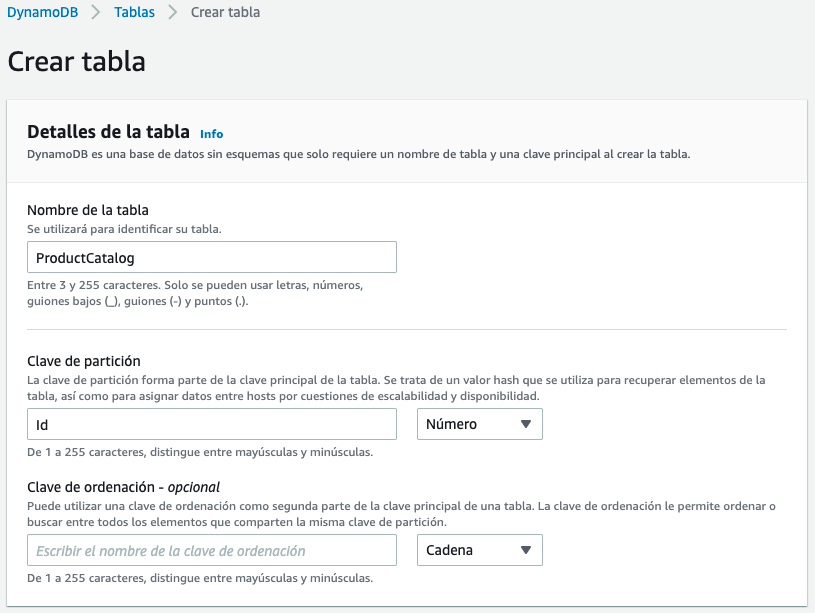
Creando la tabla
También podíamos haber creado la tabla mediante el comando create-table de AWS CLI:
Una vez ejecutado tendremos un mensaje de UnprocessedItems: {}.
También podemos cargar los datos en S3, y realizar una importación desde S3, pero el formato del documento es diferente, admitiendo datos en CSV, un formato de JSON multilínea específico de DynamoDB (compuestos de documentos Item) o un formato propietario como Amazon Ion. Así pues, primero cargaremos ProductCatalogS3.json en S3, y a continuación realizamos la importación.
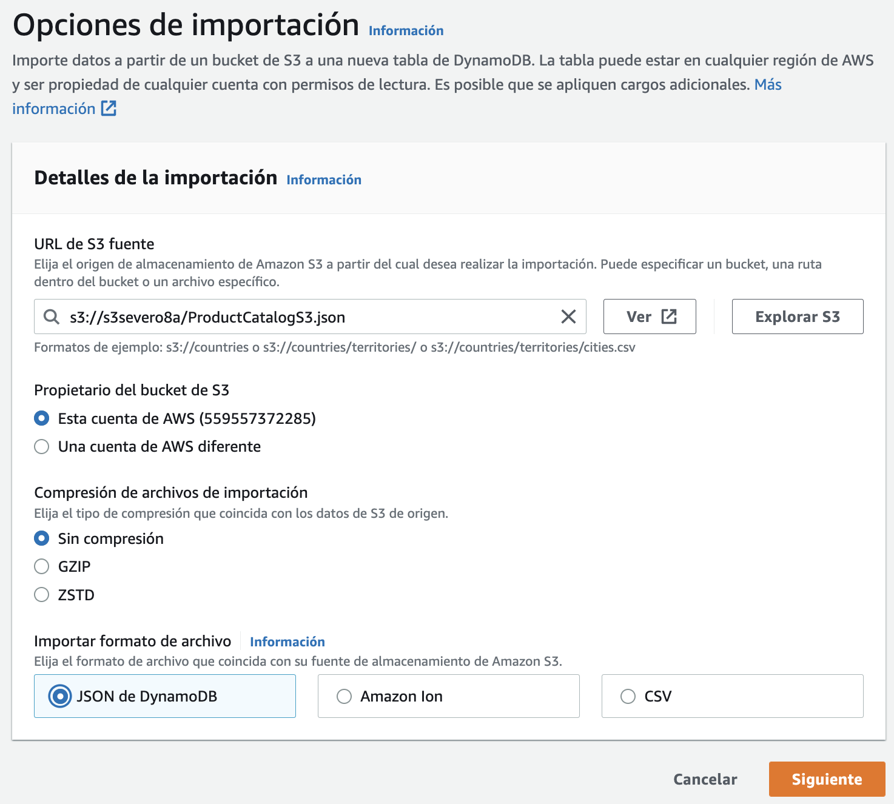
Importación en DynamoDB desde S3
Tras indicar el archivo, deberemos indicar los datos de creación de la nueva tabla (es decir, no permite importar datos sobre una tabla ya existente previamente).
Si volvemos a la consola web, tras entrar en la tabla y pulsar en Ver elementos veremos los datos ya introducidos.
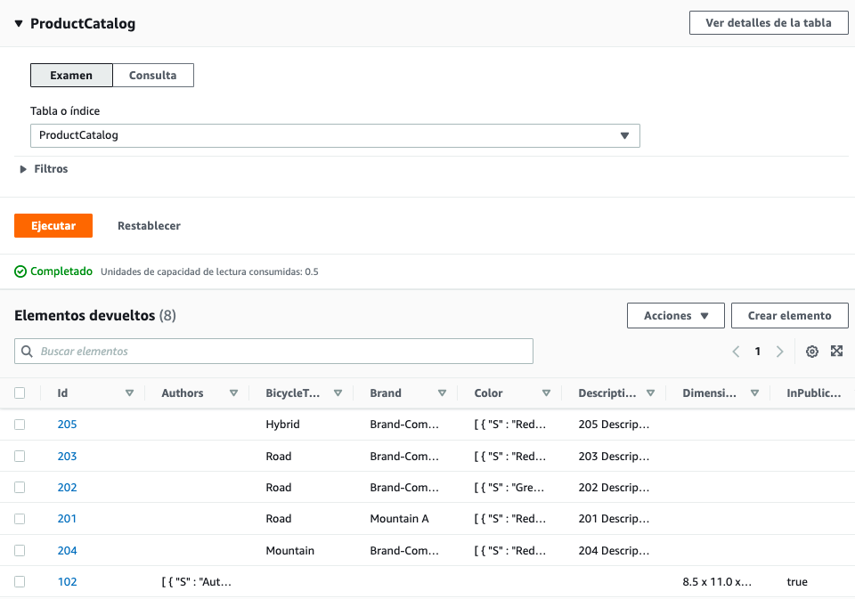
Ver elementos
Si queremos consultar información de la tabla mediante el comando describe-table de AWS CLI, ejecutaremos:
Vamos a cargar un listado de películas en DynamoDB. El primer paso es elegir las claves de particionado y ordenación. El archivo datosPeliculas.json contiene el siguiente contenido:
[{"year":2013,"title":"Rush","info":{"directors":["Ron Howard"],"release_date":"2013-09-02T00:00:00Z","rating":8.3,"genres":["Action","Biography","Drama","Sport"],"image_url":"http://ia.media-imdb.com/images/M/MV5BMTQyMDE0MTY0OV5BMl5BanBnXkFtZTcwMjI2OTI0OQ@@._V1_SX400_.jpg","plot":"A re-creation of the merciless 1970s rivalry between Formula One rivals James Hunt and Niki Lauda.","rank":2,"running_time_secs":7380,"actors":["Daniel Bruhl","Chris Hemsworth","Olivia Wilde"]}},]
Como los años de las películas permiten particionar de manera más o menos equilibrada los datos, en la mejor candidata para clave de particionado. Como sí que habrá varias películas en el mismo año, elegimos el título como clave de ordenación, provocando que los documentos tengan una clave compuesta.
Así pues, vamos a nombrar nuestra tabla como SeveroPeliculas y ponemos como clave de partición el atributo year de tipo numérico, y como clave de ordenación title de tipo cadena.
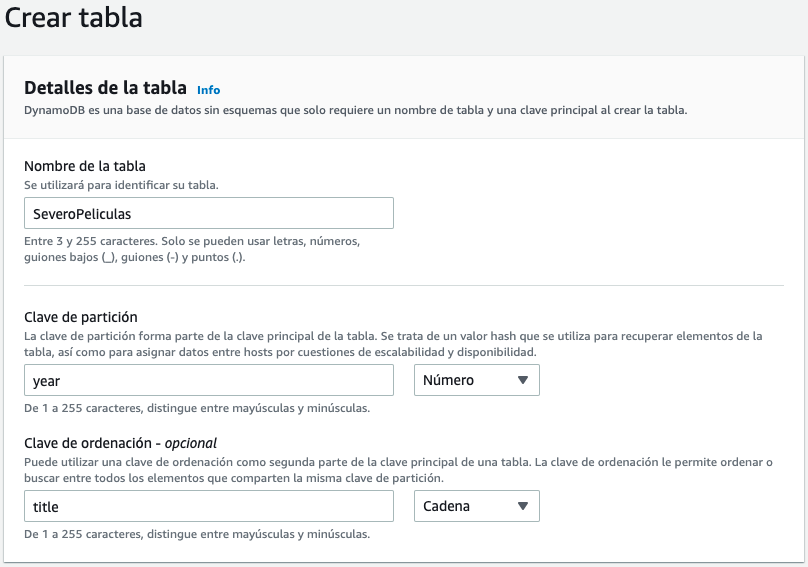
Creación de la tabla SeveroPeliculas
Una vez creada la tabla, vamos a ver cómo podemos cargar los datos. Haciendo uso de la librería boto3 vamos a crear el archivo cargarDatosPeliculas.py:
Si necesitamos escribir muchos datos, es muy útil emplear una librería como Faker para generar datos sintéticos.
Primero hemos de instalarla mediante pip:
pip3installfaker
Vamos a realizar un ejemplo para mostrar algunos datos aleatorios y comprobar su funcionamiento:
holaFaker.py
fromfakerimportFakerfake=Faker()fake=Faker('es_ES')# cambiamos el locale a españolprint("Nombre:",fake.name())print("Dirección:",fake.address())print("Nombre de hombre:",fake.first_name_male())print("Número de teléfono:",fake.phone_number())print("Color:",fake.color_name())print("Fecha:",fake.date())print("Email:",fake.email())print("Frase de 10 palabras",fake.sentence(nb_words=10))
Nombre: Dani Pla ChicoDirección: Cuesta de Emiliano Milla 66Albacete, 83227Nombre de hombre: MatíasNúmero de teléfono: +34 818 779 827Color: Salmón oscuroFecha: 1984-09-29Email: btome@example.netFrase de 10 palabras Perferendis saepe consequatur saepe sapiente est impedit eaque omnis temporibus excepturi repellat ducimus.
Los diferentes grupos de datos que genera se agrupan en Providers: de dirección, fechas, relacionados con internet, bancarios, códigos de barra, isbn, etc... Se recomienda consultar la documentación en https://faker.readthedocs.io/en/master/providers.html.
Locale ES
Al trabajar con el idioma en español, puede que algunos métodos no funcionen (más que no funcionar, posiblemente tengan otro nombre). Es recomendable comprobar las opciones disponibles en https://faker.readthedocs.io/en/master/locales/es_ES.html
Vamos a generar un CSV con datos de 1000 personas. Primero creamos una lista con los encabezados y los escribimos en el fichero, para posteriormente, línea a línea, generar los datos de cada persona:
generaCSV.py
fromfakerimportFakerimportcsvoutput=open('datosFaker.csv','w')fake=Faker('es_ES')# cambiamos el locale a españolheader=['nombre','edad','calle','ciudad','provincia','cp','longitud','latitud']mywriter=csv.writer(output)mywriter.writerow(header)forrinrange(1000):mywriter.writerow([fake.name(),fake.random_int(min=18,max=80,step=1),fake.street_address(),fake.city(),fake.state(),fake.postcode(),fake.longitude(),fake.latitude()])output.close()
Y a continuación repetimos el mismo ejemplo, pero ahora generando un documento JSON. La principal diferencia es que primero vamos a rellenar un diccionario con toda la información, y luego persistimos el diccionario:
generaJSON.py
fromfakerimportFakerimportjsonfake=Faker('es_ES')# cambiamos el locale a español# Preparamos los datosdatos={}datos['registros']=[]forxinrange(1000):persona={"datos":fake.name(),"edad":fake.random_int(min=18,max=80,step=1),"calle":fake.street_address(),"ciudad":fake.city(),"provincia":fake.state(),"cp":fake.postcode(),"longitud":float(fake.longitude()),"latitud":float(fake.latitude())}datos['registros'].append(persona)# Los metemos en el ficherooutput=open('datosFaker.json','w')json.dump(datos,output)
Una vez tenemos nuestra tabla de DynamoDB cargada con datos, llega el momento de recuperar los datos, ya sea un registro en concreto o la posibilidad de realizar una consulta, ya sea por su índice o su clave de ordenación (o ambas).
En el apartado anterior hemos estudiado que podemos realizar consultas sobre DynamoDB haciendo uso de un subconjunto de SQL conocido como PartiQL. En los siguientes ejemplos vamos a mostrar cómo realizar las operaciones vía el API de DynamoDb y mediante PartiQL.
Si queremos recuperar la película Interstellar de 2014 haremos:
importboto3frombotocore.exceptionsimportClientErrordynamodb=boto3.resource('dynamodb',region_name='us-east-1')tabla=dynamodb.Table('SeveroPeliculas')title="Interstellar"year=2014# Recupera una películaprint("------ Datos de Interstellar")try:response=tabla.get_item(Key={'year':year,'title':title},ProjectionExpression="title, info.plot")exceptClientErrorase:print(e.response['Error']['Message'])else:item=response['Item']print(item)
dynamodb_select.py
importboto3clientDDB=boto3.client('dynamodb',region_name='us-east-1')# Recupera una película con PartiQLprint("------ Datos de Interstellar mediante PartiQL")resp=clientDDB.execute_statement(Statement="SELECT title, info.plot FROM SeveroPeliculas WHERE year = 2014 and title='Interstellar'")item=resp['Items'][0]print(item)title="Interstellar"year=2014# Recupera una película con PartiQL con parámetros indicados mediante ?print("------ Datos de Interstellar mediante PartiQL con parámetros")resp=clientDDB.execute_statement(Statement='SELECT * FROM SeveroPeliculas WHERE year = ? AND title = ?',Parameters=[{'N':str(year)},{'S':title}])item=resp['Items'][0]print(item)
Los contenidos de los parámetros se indican mediante una lista con un diccionario por cada parámetro donde la clave es el tipo del parámetro, y el valor es el dato a pasar (el dato se pasa siempre como un string)
Las consultas siempre devuelven un diccionario con una propiedad Items que contiene los resultados devueltos.
Destacar que es diferente la estructura del resultado de realizar una consulta mediante el API de DynamoDB (respeta la estructura definida en la base de datos) o mediante PartiQL (crea un atributo por columna recuperada cuyo valor contiene el tipo del dato):
importboto3fromboto3.dynamodb.conditionsimportKey# Mediante querydynamodb=boto3.resource('dynamodb',region_name='us-east-1')tabla=dynamodb.Table('SeveroPeliculas')print("-----Películas de 2016")resp=tabla.query(KeyConditionExpression=Key('year').eq(2016))foriinresp['Items']:print(i['year'],":",i['title'])# Mediante PartiQLprint("-----Películas de 2016 con PartiQL")clientDDB=boto3.client('dynamodb',region_name='us-east-1')resp=clientDDB.execute_statement(Statement="SELECT title, year FROM SeveroPeliculas WHERE year = 2016")foriinresp['Items']:print(i['year']['N'],":",i['title']['S'])
importboto3importjsonimportdecimalfromboto3.dynamodb.conditionsimportKeyclassDecimalEncoder(json.JSONEncoder):defdefault(self,o):ifisinstance(o,decimal.Decimal):ifo%1>0:returnfloat(o)else:returnint(o)returnsuper(DecimalEncoder,self).default(o)anyo=2016letraInicial="A"letraFinal="F"dynamodb=boto3.resource('dynamodb',region_name='us-east-1')tabla=dynamodb.Table('SeveroPeliculas')print("-----Películas de 2016 cuyo título empieza desde A hasta L")resp=tabla.query(ProjectionExpression="#yr, title, info.genres, info.actors[0]",# year es una palabra clave, por tanto necesitamos crear un aliasExpressionAttributeNames={"#yr":"year"},KeyConditionExpression=Key('year').eq(anyo)&Key('title').between(letraInicial,letraFinal))foriinresp['Items']:print(i)# {'info': {'actors': ['Zoe Saldana'], 'genres': ['Action', 'Adventure', 'Fantasy', 'Sci-Fi']}, 'year': Decimal('2016'), 'title': 'Avatar 2'}# Transforma los valores numéricos de Decimal a Numberprint(json.dumps(i,cls=DecimalEncoder))# {"info": {"actors": ["Zoe Saldana"], "genres": ["Action", "Adventure", "Fantasy", "Sci-Fi"]}, "year": 2016, "title": "Avatar 2"}forgeneroini['info']['genres']:print(genero)print("-----Películas de 2016 cuyo título empieza desde A hasta L con PartiQL")clientDDB=boto3.client('dynamodb',region_name='us-east-1')consulta='SELECT year, title, info.genres, info.actors[0] FROM SeveroPeliculas WHERE year = ? AND title between ? and ?'resp=clientDDB.execute_statement(Statement=consulta,Parameters=[{'N':str(anyo)},{'S':letraInicial},{'S':letraFinal}])foriinresp['Items']:print(i)# [{'year': {'N': '2016'}, 'title': {'S': 'Avatar 2'}, 'actors[0]': {'S': 'Zoe Saldana'}, 'genres': {'L': [{'S': 'Action'}, {'S': 'Adventure'}, {'S': 'Fantasy'}, {'S': 'Sci-Fi'}]}}]forgeneroini['genres']['L']:print(genero['S'])
La clase DecimalEncoder se utiliza para transformar los campos Decimal que utiliza DynamoDB para almacenar contenido numérico a tipo entero o flotante según necesite.
Cuando en PartiQL no le indicamos en la condición una expresión que busque por una de las claves, se realizará un full scan sobre toda la tabla, lo que puede implicar unos costes inesperados, tanto económicos como a nivel rendimiento.
El método scan lee cada elemento de la tabla y devuelve todos los datos de la tabla. Se le puede pasar una filter_expression opcional para que sólo devuelva los elementos que cumplan el criterio. Sin embargo, el filtrado se aplica tras escanear toda la tabla.
importboto3importjsonimportdecimalfromboto3.dynamodb.conditionsimportKeyclassDecimalEncoder(json.JSONEncoder):defdefault(self,o):ifisinstance(o,decimal.Decimal):ifo%1>0:returnfloat(o)else:returnint(o)returnsuper(DecimalEncoder,self).default(o)dynamodb=boto3.resource('dynamodb',region_name='us-east-1')tabla=dynamodb.Table('SeveroPeliculas')print("-----Películas de sobresaliente mediante full scan")# Escaneo y filtradofe=Key('info.rating').gte(9)pe="#yr, title, info.rating"ean={"#yr":"year"}resp=tabla.scan(FilterExpression=fe,ProjectionExpression=pe,ExpressionAttributeNames=ean)foriinresp['Items']:print(json.dumps(i,cls=DecimalEncoder))
importboto3fromboto3.dynamodb.conditionsimportKeyprint("-----Películas de 2016 con PartiQL")clientDDB=boto3.client('dynamodb',region_name='us-east-1')resp=clientDDB.execute_statement(Statement="SELECT title, year, info.rating FROM SeveroPeliculas WHERE info.rating >= 9")foriinresp['Items']:print(i['year']['N'],":",i['title']['S'])
En la sesión de S3 trabajamos con Python con un dataset de películas, el cual filtramos mediante S3Select y nos quedamos con el título, la nota media y la trama siempre y cuando hayan recibido al menos 10.000 votos, el cual almacenamos en TMDb_filtered.csv.
Una vez creado el fichero en S3, vamos cargar los datos en DynamoDB. Como el dataset no contenía la fecha de la película, en nuestro caso le vamos a poner a todas las películas que son del 2022:
importboto3importpandasaspdfromdecimalimportDecimal# 1.- Leemos el fichero desde S3 y lo metemos en un DataFrames3c=boto3.client('s3')bucketNombre="s3severo2122python"ficheroNombre="TMDb_filtered.csv"response=s3c.get_object(Bucket=bucketNombre,Key=ficheroNombre)movies_df=pd.read_csv(response['Body'],delimiter=',')# 2.- Nos conectamos a DynamoDBdynamodb=boto3.resource('dynamodb',region_name='us-east-1')tabla=dynamodb.Table('SeveroPeliculas')# 3.- Lo metemos en DynamoDB mediante un batchwithtabla.batch_writer()asbatch:forindex,filainmovies_df.iterrows():Item={'year':2022,'title':str(fila['title']),'info':{'plot':fila['overview'],'rating':Decimal(fila['vote_average']).quantize(Decimal('1.00'))}}batch.put_item(Item=Item)
Para estos actividades y futuras sesiones, vamos a utilizar una base de datos (retail_db) que contiene información sobre un comercio (clientes, productos, pedidos, etc...).
Para ello, descargaremos el archivo create_db.sql con las sentencias para crear la base de datos y los datos como instrucciones SQL.
Tras ello, bien sea mediante DBeaver o si nos conectamos a MariaDB (mariadb -u iabd -p) desde la misma carpeta que hemos descargado el archivo, ejecutaremos los siguientes comando:
Todo el código a continuación se basa en MariaDB como sistema gestor de base de datos. Si queremos conectarnos, debemos indicar los datos de conexion:
importmariadbimportsystry:conn=mariadb.connect(user="admin",password="adminadmin",host="iabd.cllw9xnmy9av.us-east-1.rds.amazonaws.com",port=3306,database="retail_db")exceptmariadb.Errorase:print(f"Error conectando a MariaD: {e}")sys.exit(1)# Obtenemos el cursorcur=conn.cursor()
Una vez nos hemos conectado y tenemos abierto un cursor, ya podemos hacer consultas y recuperar datos.
Por ejemplo, para recuperar toda la información de los clientes almacenada en la tabla customers:
sql="select * from customers"cur.execute(sql)resultado=cur.fetchAll()# Cerramos el cursor y la conexióncur.close()conn.close()# Mostramos el resultadoprint(resultado)
Vamos a realizar otro ejemplo sencillo que recupere el nombre, apellido y email de los clientes mediante una consulta que reibe un parámetro:
importmariadbimportsysimportjsonimportboto3try:conn=mariadb.connect(user="admin",password="adminadmin",host="iabd.cllw9xnmy9av.us-east-1.rds.amazonaws.com",port=3306,database="retail_db")exceptmariadb.Errorase:print(f"Error conectando a MariaDB: {e}")sys.exit(1)ciudad="Brownsville"# Obtenemos el cursorcur=conn.cursor()sql="select customer_fname, customer_lname, customer_zipcode from customers where customer_city=?"cur.execute(sql,(ciudad,))# Generamos un JSON con los datosrow_headers=[x[0]forxincur.description]clientes=cur.fetchall()json_data=[]forclienteinclientes:json_data.append(dict(zip(row_headers,cliente)))# Cerramos el cursor y la conexióncur.close()conn.close()# Persistimos el JSON en S3s3r=boto3.resource('s3',region_name='us-east-1')object=s3r.Object('s3severo2122python','clientesRDS.json')object.put(Body=json.dumps(json_data))
Para este caso de uso, vamos a crear una nueva tabla en DynamoDB a la que llamaremos SeveroClientes y le pondremos como clave de particionado el campo Id de tipo numérico y como clave de ordenamiento el Zip de tipo texto.
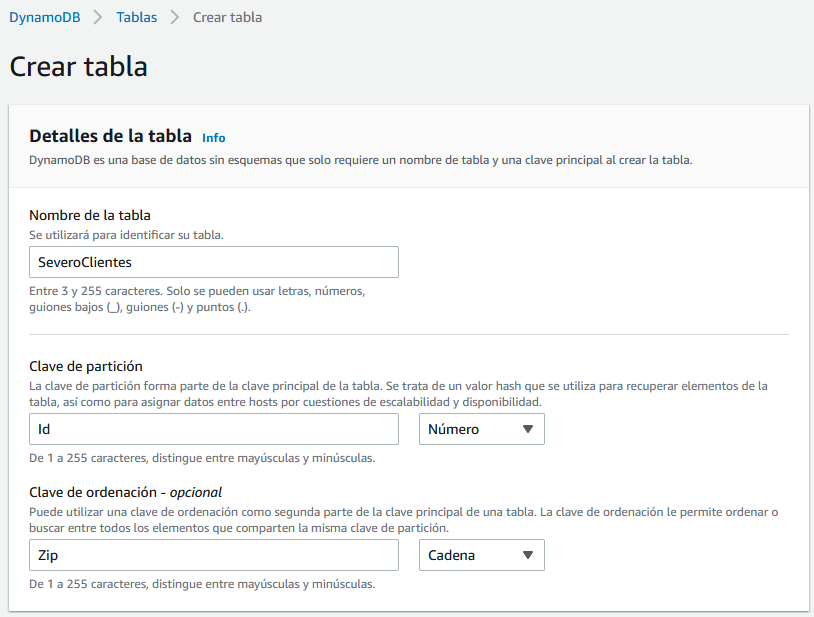
Creación de la tabla SeveroClientes
Vamos a modificar el ejemplo anterior para que, una vez recuperado los datos de la base de datos, los almacene directamente en DynamoDB:
importmariadbimportsysimportboto3try:conn=mariadb.connect(user="admin",password="adminadmin",host="iabd.cllw9xnmy9av.us-east-1.rds.amazonaws.com",port=3306,database="retail_db")exceptmariadb.Errorase:print(f"Error conectando a MariaDB: {e}")sys.exit(1)ciudad="Brownsville"# Obtenemos el cursorcur=conn.cursor()sql="select customer_id, customer_fname, customer_lname, customer_zipcode from customers where customer_city=?"cur.execute(sql,(ciudad,))# Recorremos el cursor e insertamos en DynamoDBdynamodb=boto3.resource('dynamodb',region_name='us-east-1')tabla=dynamodb.Table('SeveroClientes')withtabla.batch_writer()asbatch:forcustomer_id,customer_fname,customer_lname,customer_zipcodeincur:Item={'Id':customer_id,'Zip':customer_zipcode,'Nombre':customer_fname,'Apellidos':customer_lname,}batch.put_item(Item=Item)# Cerramos el cursor y la conexióncur.close()conn.close()
Bases de datos y Pandas
Si estás interesado en colocar dentro de Pandas los datos que recuperas desde una base de datos, es muy común utilizar SQLAlchemy el cual ofrece una capa por encima de los drivers (además de ofrecer un framework ORM).
Un fragmento de código que utiliza Pandas y SQLAlchemy sería similar a:
fromsqlalchemyimportcreate_engineimportpymysqlimportpandasaspdsqlEngine=create_engine('mysql+pymysql://iabd:@127.0.0.1',pool_recycle=3600)dbConnection=sqlEngine.connect()df=pd.read_sql("select * from retail_db.customers",dbConnection);
(RA5075.2 / CE5.2a / 1p) Realizar el módulo 8 (Bases de Datos) del curso ACF de AWS.
(RA5075.2 / CE5.2a / 1p) Siguiendo el ejemplo de RDS, crea una instancia (instituto) de una base de datos de tipo MariaDB y cárgala con los datos de retail_db.
A partir de esta instancia, crea una instantánea de forma manual. A continuación, restaura esta instantánea en una nueva instancia (por ejemplo, instituto2) de tipo db.t4g.small, y tras conectarte mediante DBeaver, comprueba que tiene los datos ya cargados. Adjunta una captura de pantalla donde se vean las características de las dos instancias.
(RA5075.2 / CE5.2a / 1p) Siguiendo el ejemplo de DynamoDB, crea la tabla (ProductCatalog), cárgala con los datos del ejemplo y realiza un consulta para obtener las bicicletas híbridas. Exporta el resultado a CSV.
(RA5075.2 / CE5.2a / 1p) Realiza los casos de uso 1 y 2 de interacción desde Python con DynamoDB.